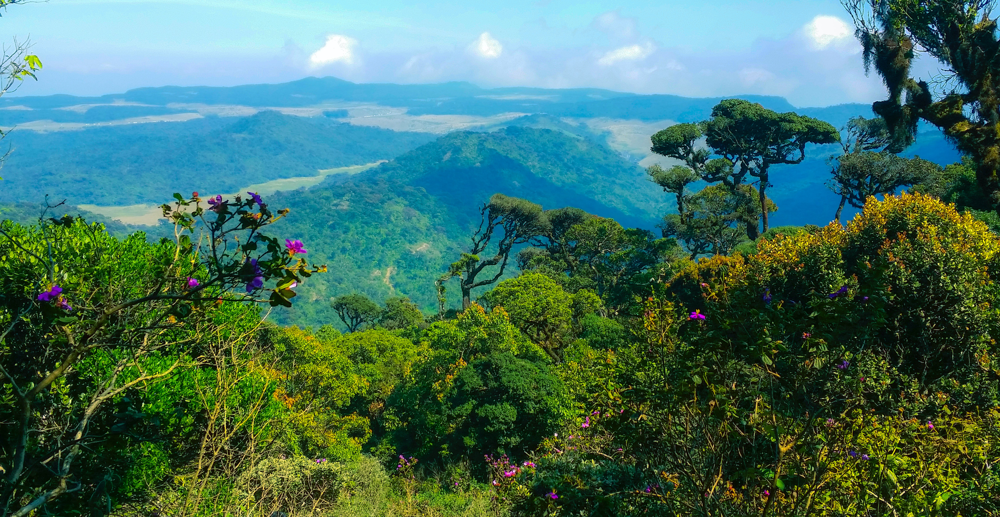

Top countryside sights in Sri Lanka
Adam's Peak
Adam's Peak or Śrī Pāda is a 2,243 m (7,359 ft) tall conical sacred mountain located in central Sri Lanka. It is well known for the "Śrī Pāda" (Sinhala: ශ්රී පාද), i.e., "sacred footprint", a 1.8 m (5 ft 11 in) rock formation near the summit. In Buddhist tradition the print is held to be the footprint of the Buddha, in Hindu tradition that of Hanuman or Shiva (Tamil: சிவனொளிபாதமலை, lit. 'Sivanolipaathamalai'), i.e., "Mountain of Shiva's Light", and in some Islamic and Christian traditions that of Adam, or that of St. Thomas.The mountain is also known as Mount Malaya in Buddhist sources, particularly the Mahayana Lankavatara Sutra, which states that the Buddha preached this sutra on top of the mountain. According to this sutra, the mountain was the abode of Rāvanā, overlord of the Raskshasas and ruler of Laṅkā. Other names in Sanskrit sources include Mount Lanka, Ratnagiri (Mountain of Gems), Malayagiri (Mount Malaya) or Mount Rohana.
The mountain is also seen as the abode of the deity Saman and also goes by various names associated with this, including Sumanakūta (Sumana's Mountain) and Samanalakanda (Saman's Mountain or Mountain of the Butteries).

Photo by Ishan Kahapola Arachchi on Unsplash
Horton Plains National Park
Horton Plains National Park (Sinhala: හෝර්ටන් තැන්න ජාතික උද්යානය, romanized: Hortan Thanna Jathika Udyanaya) is a national park in the central highlands of Sri Lanka that was designated in 1988. It is located at an elevation of 2,100–2,300 m (6,900–7,500 ft) and encompasses montane grassland and cloud forest. It is rich in biodiversity and many species found here are endemic to the region. It is also a popular tourist destination and is situated 8 kilometres (5.0 mi) from Ohiya, 6 kilometres (3.7 mi) from the world-famous Ohiya Gap/Dondra Watch and 32 kilometres (20 mi) from Nuwara Eliya.The Horton Plains are the headwaters of three major Sri Lankan rivers, the Mahaweli, Kelani, and Walawe. In Sinhala the plains are known as Maha Eliya Plains (මහ එළිය තැන්න). Stone tools dating back to Balangoda culture have been found here. The plains' vegetation is grasslands interspersed with montane forest and includes many endemic woody plants. Large herds of Sri Lankan sambar deer feature as typical mammals and the park is also an Important Bird Area with many species not only endemic to Sri Lanka but restricted to the Horton Plains. Forest dieback is one of the major threats to the park and some studies suggest that it is caused by a natural phenomenon.
The sheer precipice of World's End and Baker's Falls are among the tourist attractions of the park.

Photo by Rowan Heuvel on Unsplash
Nuwara Eliya
Nuwara Eliya (Sinhala: නුවර එළිය [nuwərə ɛlijə]; Tamil: நுவரெலியா) is a city in the hill country of the Central Province, Sri Lanka. Its name means "city on the plain (table land)" or "city of light". The city is the administrative capital of Nuwara Eliya District, with a picturesque landscape and temperate climate. It is at an altitude of 1,868 m (6,128 ft) and is considered to be the most important location for tea production in Sri Lanka. The city is overlooked by Pidurutalagala, the tallest mountain in Sri Lanka. Nuwara Eliya is known for its temperate, cool climate – the coolest area in Sri Lanka.The city was founded by Samuel Baker, the explorer of Lake Albert and the upper Nile in 1846. Nuwara Eliya's climate lent itself to becoming the prime sanctuary of the British civil servants and planters in Ceylon. Nuwara Eliya, called Little England, was a hill country retreat where the British colonialists could immerse themselves in their pastimes such as fox hunting, deer hunting, elephant hunting, polo, golf and cricket.